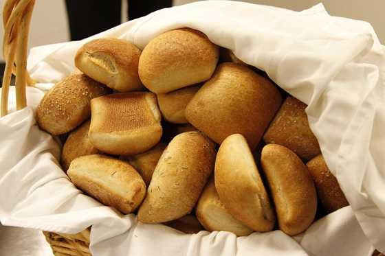
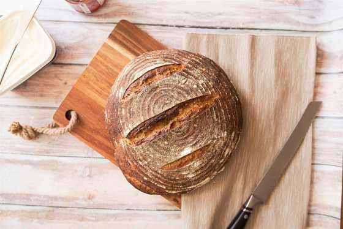
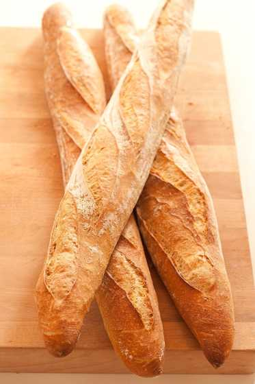

愛媛県宇和島市 坂下津
坂下津製パン所
平日のお昼に、焼きたてのパンとお弁当をそっと届ける。そんな、坂下津のまちのパン屋さん。
電話: 準備中

このページの写真はフリー素材のイメージで、店舗の実際の商品・店内・外観ではありません。海外で撮影されたものや撮影地が不明なものが含まれます。
パンとお弁当
お店のInstagramのプロフィールには「焼き立てパンとお弁当をランチ配達します」とあります。具体的な商品名・価格・配達の範囲や注文方法は確認できていないため、準備中としています。





- 商品・価格準備中
- 営業時間準備中
口コミ(イメージ例)
イメージ例
お昼にあたたかいパンが届くと、午後の仕事もがんばれそうです。
イメージ例
パンとお弁当を一緒に頼めたら、職場のみんなで分けられて便利だなと思います。
イメージ例
地元の坂下津にこんなパン屋さんがあると、ちょっと誇らしい気持ちになりそうです。
上の3件は、制作側が考えたイメージ例です。実際のお客様の声ではありません。
お店のこと
確認できた事実愛媛県宇和島市坂下津甲407-209にあるパン屋さんです。Instagramのプロフィールに「焼き立てパンとお弁当をランチ配達します♪」とあり、店休日は土曜・日曜・祝日と案内されています(最新の情報はお店にご確認ください)。
制作側のイメージ店名の由来や理念は確認できていません。ここでは「昼どきに、焼きたてを届ける」という営業スタイルから、あたたかな小麦色と、パンを包む紙のような色合いでまとめた試作です。


アクセス
- 店名坂下津製パン所
- 所在地〒798-0087 愛媛県宇和島市坂下津甲407-209
- 電話準備中
- 定休日土曜・日曜・祝日(Instagramプロフィールより)
- Instagram@sakashiz_panpakapaan